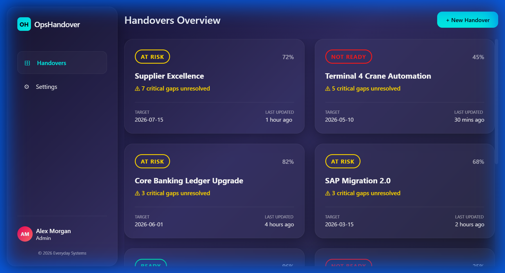
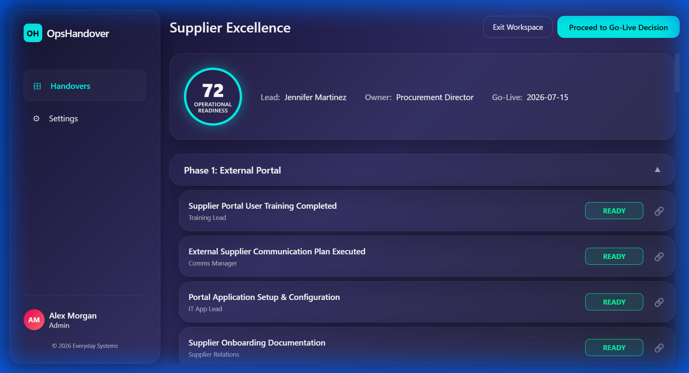
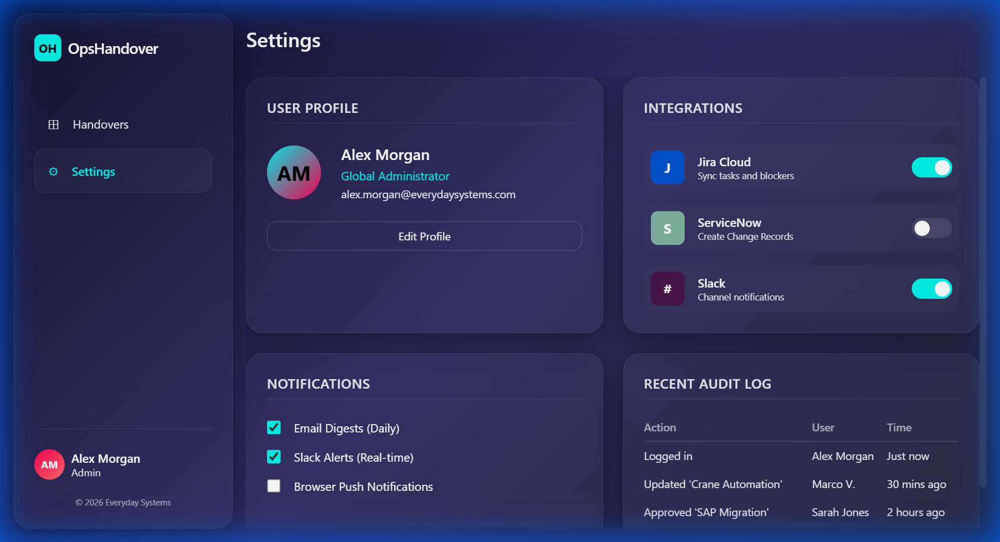

Operational readiness tracking platform for managing project handovers from delivery to business-as-usual operations.
← Back to ProjectsThe transition from project delivery to business-as-usual operations is one of the riskiest phases in any transformation program. Teams often discover critical gaps only after go-live, leading to incidents, poor user adoption, and expensive post-launch fixes. Traditional handover processes rely on spreadsheets and email chains, making it difficult to track readiness across multiple dimensions.
OpsHandover provides structure and visibility to this critical phase, ensuring projects are truly ready before go-live decisions are made.

High-level overview of all active handover projects with operational readiness scores, status indicators (At Risk, Not Ready, Ready), and critical gap tracking. Each project card shows target dates and last update timestamps to keep stakeholders informed.

Organize handover tasks by project phases with clear responsibility assignment. Track completion status, link evidence for each task, and monitor progress toward operational readiness. The 72% readiness score aggregates task completion and risk factors.

Seamless connections with Jira Cloud for task syncing, ServiceNow for change records, and Slack for real-time notifications. Configure notification preferences including daily email digests and Slack alerts. Audit logging tracks all user actions for compliance.
Automatic highlighting of critical gaps and unresolved high-priority issues that could impact go-live.
Aggregated operational readiness metrics combining task completion and risk factors into a single score.
Attach and link evidence for task completion, ensuring audit trail and compliance requirements are met.
Real-time alerts via Slack and daily email digests keep stakeholders informed of progress and blockers.